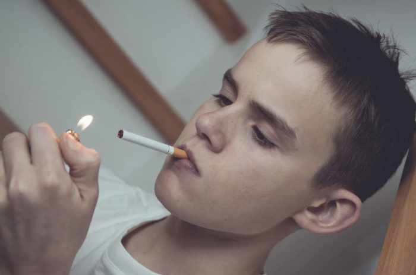
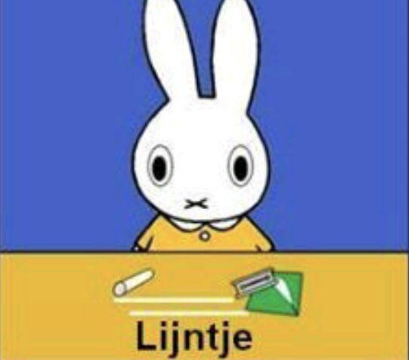

Drugs
Drugs zijn stoffen die invloed hebben op je lichaam en geest.
Ze kunnen ervoor zorgen dat je je anders voelt, denkt of gedraagt. Er zijn verschillende soorten drugs. Zo heb je stimulerende drugs, zoals XTC, die je energie geven en je een blij of verbonden gevoel kunnen geven.
Ook zijn er hallucinogene drugs, die ervoor zorgen dat je dingen ziet of hoort die er niet zijn.
Het gebruik van drugs brengt risico’s met zich mee. Vooral voor jongeren is dit belangrijk, omdat je hersenen zich nog ontwikkelen tot ongeveer je 25e.
Drugs kunnen deze ontwikkeling verstoren en invloed hebben op je geheugen, emoties en gedrag.

Verslaving
Sommige mensen kunnen verslaafd raken aan drugs. Verslaving betekent dat je niet meer zonder een middel kunt en de controle over je gebruik verliest.
Daarnaast kan ook alcohol, dat vaak als normaal wordt gezien, gevaarlijk zijn.
Te veel alcohol kan ervoor zorgen dat je minder controle hebt over jezelf en zelfs een black-out krijgt.
Het is belangrijk om altijd je eigen keuzes te maken. Als iemand je drugs aanbiedt en je wilt dat niet, is het verstandig om nee te zeggen en je niet onder druk te laten zetten.
